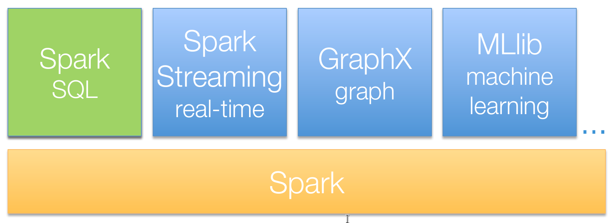
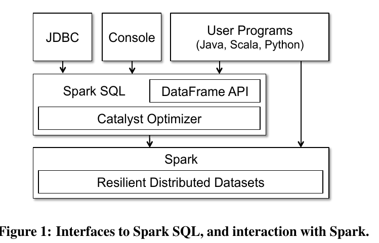
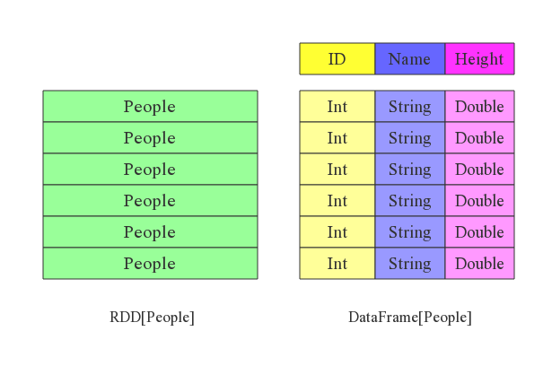
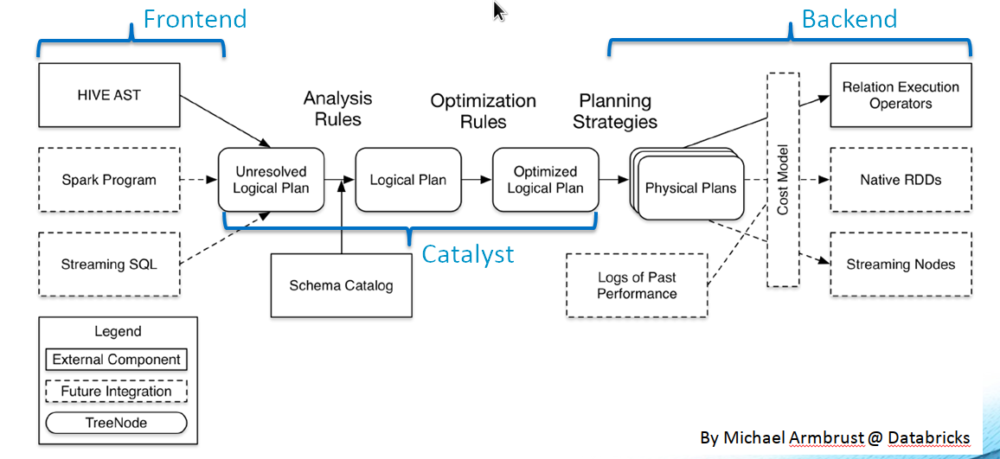

Spark SQL
Spark 简介
Hadoop 伴随着大数据的兴起已有十年时间，被认为是大数据处理的首选解决方案， 它分别提供HDFS和MapReduce解决了大数据（无法在单台机器上存储与处理的数据）的可靠存储和处理，但对于一些场景， MapReduce并不是十分高效，其一，MapReduce的抽象层次低，仅提供了map和reduce两个操作，对于应用需要编写大量代码；其二，一个job只包括了map和reduce两个阶段，想要完成复杂的工作，就必须串联一系列MapReduce作业，但每一步的输出数据必须存储到HDFS，导致io操作繁重，时延较高，只适合批处理，不适合实时处理和迭代计算。
Apache Spark是一个新兴的大数据处理引擎，它允许开发者使用有向无环图 (DAG) 开发复杂的数据操作，内部使用一个集群上的分布式内存抽象 (RDD) ，简化了对分布式数据的编程复杂性。RDD 提供了两类操作，转换和动作，转换在原有 RDD 上通过一些操作定义了一个新的 RDD ，包括map, flatMap, filter, union, sample, join, groupByKey, cogroup, ReduceByKey, cros, sortByKey, mapValues等，动作是返回一个结果，包括collect, reduce, count, save, lookupKey。在这里，所有的转换操作都是惰性求值的，只有执行到动作操作才会真正进行数据处理。即，RDD的转换操作会生成新的RDD，新的RDD的数据依赖于原来的RDD的数据，每个RDD又包含多个分区。那么一段程序实际上就构造了一个由相互依赖的多个RDD组成的 DAG， 并通过在RDD上执行动作将这个有向无环图作为一个Job提交给Spark执行。通过RDD的惰性计算，减少了数据的传输和写磁盘操作，在某些情景下，可以将spark的速度提高到Hadoop的100倍。同时，RDD是容错的，系统可以使用RDD的谱系图恢复丢失的数据。
Spark 支持 Hadoop 的分布式文件系统 HDFS，也可以将 Spark 部署到 Hadoop 的资源调度框架 Yarn 之上， 因此，可以将Spark 看作 Hadoop MapReduce 的一个替代品。Spark和Hadoop的差别不仅仅在增强了MapReduce上，Spark还提供高级的(Scala，Java和Python)API以提升开发者的生产力，此外，Spark框架为批处理（Spark Core），交互式（Spark SQL），流式（Spark Streaming），机器学习（MLlib），图计算（GraphX）提供一个统一的数据处理平台，这相对于使用Hadoop有很大优势。

Spark SQL
对大数据的处理方式早期有MapReduce，在Spark出现后多了对RDD的转换和动作API，对这些强大但低级的编程接口进行编程是十分繁重的，需要用户手动优化以实现高性能和数据分布均衡。因此，目前多个系统旨在向大数据提供关系接口(SQL)来提供更高效的用户体验，诸如Pig，Hive，Dremel和Shark之类的系统都利用声明式查询来提供更丰富的自动优化。特别是，SQL由于其简单的特点，被广泛使用，同时，传统数据库有着几十年的SQL优化经验，如果SQL优化策略合入大数据处理中，这将大大简化大数据的处理过程，降低对用户的要求，也可以自动提高处理效率。
Spark SQL的前身是Shark，Shark 基本上就是把Hive移植到了Spark，使用Spark作为执行引擎后，Shark确实比Hive的执行效率有了极大提升，但由于Hive的优化器是针对MapReduce量身定制的，难以扩展，难以构建新功能，例如机器学习的数据类型或支持除Hive外的新数据源。因此在2014年6月1日Shark项目和Spark SQL项目的主持人Reynold Xin宣布：停止对Shark的开发，团队将所有资源放Spark SQL项目上。Spark SQL是Apache Spark中的一个新模块，它将关系处理与Spark的功能编程API相集成。基于Shark上的经验，Spark SQL允许Spark程序员利用关系处理（例如声明式查询和优化存储）的优势，并允许SQL用户在Spark中调用复杂的分析库（例如机器学习）。
SparkSQL体系结构如下图所示，整体由上到下分为三层：编程模型层、执行任务优化层以及任务执行引擎层，其中SparkSQL编程模型可以分为SQL和DataFrame两种；执行计划优化又称为Catalyst，该模块负责将SQL语句解析成AST（逻辑执行计划），并对原始逻辑执行计划进行优化，最终输出优化后的物理执行计划；任务执行引擎就是Spark内核，负责根据物理执行计划生成DAG，在任务调度系统的管理下分解为任务集并分发到集群节点上加载数据运行。

DataFrame
Spark SQL API 中的主要抽象方法是 DataFrame，DataFrame类似于R 和 Python pandas 中的 DataFrame , 与关系型数据库中的数据库表类似，每一列都有命名。但 Spark SQL 中的 DataFrame 基于RDD，是分布式的。在Spark 1.3之前， 它被称为SchemaRDD。RDD 可以转换为 DataFrame，但与RDD不同，DataFrames跟踪其模式并支持各种关系操作以得到更优化的执行。即，RDD是不知道内部数据的结构的，而使用DataFrame可以让框架了解RDD内部的数据结构，便于引擎进行优化。
可以根据下图对比RDD与DataFrame数据结构的差别：

从图上看，DataFrame相比RDD多了一个表头，同时每列的数据类型也被规定了。DataFrame将一行切分了多个列，每个列都有一定的数据格式，数据粒度相比更细，因此就能支持更多更细粒度的算子，比如select算子、groupby算子、where算子。由于每列的数据类型被规定了，数据项的转换也都将是类型安全的，这对于较为复杂的数据计算程序的调试是十分有利的，很多数据类型不匹配的问题都可以在编译阶段就被检查出来。
DataFrames可以从系统目录中的表（基于外部数据源）构建，也允许程序通过JDBC / ODBC访问数据集。一旦DataFrame构建完成，它们可以用各种关系运算符来处理，例如where和groupBy，它们类似于与R和Python中的数据帧域特定语言（DSL）表达式。与RDD类似，Spark DataFrames是懒惰的，因为每个DataFrame对象都代表一个用于计算数据集的逻辑计划，但是直到用户调用特定的“输出操作”（如保存）才会执行任何执行。用户可以使用类似于R数据帧和Python Pandas的域特定语言（DSL）来对DataFrames执行关系操作。DataFrames支持所有常见的关系运算符，包括投影（选择），过滤器（where），连接和聚合（groupBy）。
Catalyst 优化器
Scala的一些特性使得它非常适合开发优化编译器，为了实现Spark SQL，Spark开发者基于Scala中的功能编程结构设计了一个新的可扩展优化器Catalyst。Catalyst的核心包含一个用于表示树并应用规则来操纵树的通用库，在此之上，构建了专用于关系查询处理（例如表达式，逻辑查询计划）执行不同阶段的规则：分析，逻辑优化，物理规划和代码生成。Catalyst是可扩展的，其目的在于能够轻松地向Spark SQL添加新的优化技术和功能，特别是为了解决我们特别使用“大数据”（例如，半结构化数据和高级分析）所遇到的各种问题，同时，使外部开发人员能够扩展优化器，例如，通过添加可将过滤或聚合推送到外部存储系统的数据源特定规则，或支持新的数据类型。
SQL优化器核心执行策略主要分为两个大的方向：基于规则优化（RBO）以及基于代价优化(CBO)，Catalyst支持基于规则和基于成本的优化，通过使用规则生成多个计划，然后计算其成本来执行基于代价的优化。Catalyst的大致流程为：SQL语句首先通过Parser模块被解析为语法树，此棵树称为Unresolved Logical Plan；Unresolved Logical Plan通过Analyzer模块借助于数据元数据解析为Logical Plan；此时再通过各种基于规则的优化策略进行深入优化，得到Optimized Logical Plan；优化后的逻辑执行计划依然是逻辑的，并不能被Spark系统理解，此时需要将此逻辑执行计划转换为Physical Plan。

分析
Spark SQL从SQL解析器返回的抽象语法树（AST）或使用API构造的DataFrame对象中计算出的关系开始。在这两种情况下，关系可能包含未解析的属性引用或关系：例如，在SQL查询SELECT col FROM sales中，col的类型，或者是否是有效的列名称，直到我们查找才会知道。如果我们不知道它的类型或者没有将它与输入表（或者别名）匹配，那么这个属性称为未解析。Spark SQL遍历整个语法树，使用Catalyst规则和Catalog对象来跟踪所有数据源中的表以解析这些属性。它首先构建一个具有未绑定属性和数据类型的“未解决的逻辑计划”树，然后应用执行以下操作的规则：
- 从目录中按名称查找关系。
- 将命名属性（例如col）映射到给定运算符的子节点的输入。
- 确定哪些属性引用相同的值以给它们一个唯一的ID（稍后可以优化，如col = col）。
逻辑优化
逻辑优化阶段将基于规则的优化应用于逻辑计划。基于规则的优化策略实际上就是对语法树进行一次遍历，模式匹配能够满足特定规则的节点，再进行相应的等价转换。因此，基于规则优化说到底就是一棵树等价地转换为另一棵树。SQL中经典的优化规则有很多，三种比较常见的规则有：谓词下推（Predicate Pushdown）、常量累加（Constant Folding）和列值裁剪（Column Pruning
物理规划
在物理规划阶段，Spark SQL采用逻辑计划，并使用与Spark执行引擎匹配的物理运算符生成一个或多个物理计划。然后使用成本模型选择一个计划。目前，SparkSQL没有很好的支持基于代价优化，基于成本的优化仅用于选择连接算法。物理计划员还可以执行基于规则的物理优化。
代码生成
查询优化的最后阶段包括生成Java字节码以在每台机器上运行。因为Spark SQL通常在内存数据集中运行，因为处理是CPU限制的，因此我们希望支持代码生成以加快执行速度。尽管如此，代码生成引擎通常很难构建，实际上与构建编译器相当。Catalyst依靠Scala语言的一个特殊功能，quasiquotes ，使代码生成更简单。Quasiquotes允许以Scala语言编程构建抽象语法树（AST），然后可以在运行时将其提供给Scala编译器以生成字节码。我们使用Catalyst将表示SQL中的表达式的树转换为用于Scala代码的AST，以评估该表达式，然后编译并运行生成的代码。